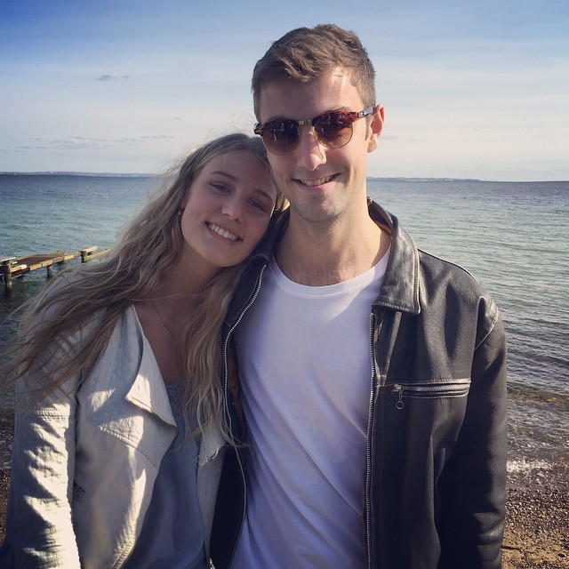

Hello
I'm Phillip Raffnsøe,
I'm a fullstack developer.
I study Multimedia Design at the Copenhagen School of Design and technology. I love making stuff work on the web and I truly love making it look beautiful.
I like doing backend and frontend stuff. I'm hardly every satisfied with my work – not because it's a bad piece of work, but because I learn neat stuff on all my projects, and I have the feeling that I could apply that and improve my work
Work
-
CPH Guide
CPH Guide is a web app guide as a school project for Danish boat rental company GoBoat. It has several guides that takes the user through historical and architectural locations in Copenhagen. Additionally it allows for the user to create their own guided route, that can be shown on a map
Node.js, MongoDB and AngularJS. Uses localstorage for personal guide. First time using AngularJS.
-
Kanbanjo
Kanbanjo is – as the name might suggest – a Kanban Board web app I built for use in school. Making and keeping up with a traditional kanban board in a school enviroment can be hard, considering we cant ensure one walls permanence for much more than five minutes...
Backed: Node.js Express server hooked up with MongoDB. Frontend: AngularJS. Experimenting with flexbox.
-
Svenskeren
Contractor and carpentry company Svenskeren wanted a new responsive, mobile friendly website reflecting their modern craftsmanship. One of their big requests was the ability for clients as well as as the workers to be able to log in and communicate and share ideas, images, drawings and more with eachother.
Public site is basic HTML sprinkled with JavaScript. Client site consists backend with a Node server hooking up to a MongoDB server storing client information. Frontend is coded in AngularJS for the nice Single-Page-Application-feeling.
Hover over my work to see a description
About
I am a based in Frederiksberg, Copenhagen. I'm a student of Multimedia design at the Copenhagen School of Design and Technology.
My passion is making stuff on the internet. I'm self-taught since I started in 2008, and only recently have I begun my design education.
Web development and design is not just something i work with, but also something I spend my free time on. I usually always have one or two personal web app projects I'm working on, and I'm always developing my skill and learning new stuff, be it programming an app so I could control my Spotify via my browser, upload torrents from the school so my desktop could download them or a simple realtime-updating 'Get Things Done'-web app.
What else?
When I'm not in front of a screen, I act as the President for the FridayBar on my school – a title that actually takes a lot of time from me, but has given me a foray into conducting business and managing people.
My two neighbours are Søndermarken and Frederiksberg Have – two lovely places that take up a lot of my time. Here I occassionally run, or just go on walks.
I consider myself some of a movie aficionado, having seen way too many (good and bad) movies – or at least enough to be a minor PITA when deciding movies on Netflix with friends. So if our conversation ever goes into awkward silence, turn to this subject – I can go on for hours (or maybe avoid it.).
My toolset:
Macbook
Sublime Text
Angular.js
Sass
Terminal
Photoshop
Illustrator
NodeJS
Transmit
Gulp
Contact
If you're interested in working with me, or just want to say hello, you can catch me at hello@praffn.dk.
I'm always up for a quick chat on my mobile too: +45 42313410
Also, you can find me on various social media: